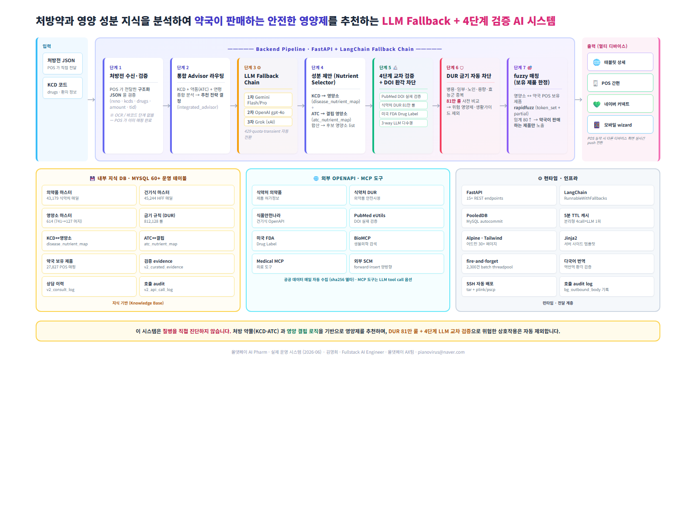

식약처 의약품·DUR 81만 룰 · PubMed · FDA 공공 데이터를 통합한 RAG, LLM Fallback Chain (Gemini → OpenAI → Grok) + 4단계 교차 검증 으로 DOI 환각을 차단하는 환자 맞춤 영양제 추천 시스템. 데이터 ETL · 어드민 SPA · 태블릿 / POS / 네이버 커넥트 / 모바일 멀티 디바이스 UI · 외부 SCM 양방향 통신 · 운영까지 직접 구현했습니다.
약사가 처방전을 받았을 때, 환자의 질병코드(KCD)·처방약·연령을 종합 분석해 "이 환자에게 이 영양제가 왜 필요한지" AI 가 근거와 함께 즉시 추천하고, 그 결과를 태블릿·POS·네이버 커넥트 등 멀티 디바이스로 환자에게 보여주는 풀스택 시스템입니다.
단순 LLM Wrapper 가 아니라, PubMed 논문·식약처 DUR·미국 FDA 라는 공공 의료 데이터를 직접 수집·정규화하고, LLM 의 잘못된 답변(DOI 환각) 을 4단계로 교차 검증해 근거 없는 추천을 자동으로 차단하는 신뢰성 중심 설계가 핵심입니다.

LLM 이 만들어낸 가짜 논문 DOI 가 환자에게 노출되지 않도록, PubMed 검색 → 논문 본문 fetch → 3-way LLM 교차 평가 → 다수결 통과만 노출의 검증 파이프라인 구축. 미통과 항목은 자동 검토 큐로 분리.
POS 가 미매핑 상품 2,300+건을 한 번에 보내도 클라이언트 timeout 없이 즉시 ack 후 백그라운드 threadpool 에서 fuzzy 매칭·외부 SCM forward 처리. 500건씩 batch wrap + row-level 실패 추적 + 완료 시 DB 결과 반영.
식약처 DUR 81만건 룰 (병용금기·임부금기·노인주의·용량주의·효능군 중복) 을 환자 처방약과 자동 비교, 위험 조합 영양소·생활가이드는 추천에서 자동 제외. 약사가 받는 결과는 이미 1차 안전성 필터링 완료 상태.
Gemini 429(quota) → OpenAI → Grok 순으로 자동 전환. 5분 TTL 결과 캐시로 분리형 endpoint(info/nutrients/guides/contras) 가 같은 처방을 4번 호출해도 LLM 1회만 호출. 비용·지연 최적화.
같은 추천 결과를 태블릿 / POS 간편 / 네이버 커넥트 / 모바일 wizard 4개 디바이스에 각각 맞는 레이아웃으로 렌더링. POS 동작에 따라 화면을 실시간 push 전환.